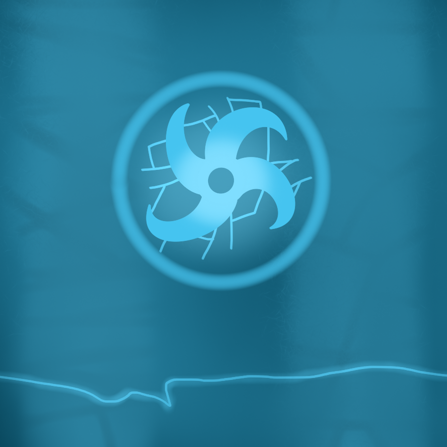

One of the many representations for Morna
Morna is something I've come up with far in the past and still used it in my projects years later. It was supposed to be featured in an real-time strategy game during my high-school days. I don't remember all details of that game except it was heavily Battle Realms influenced.
The Morna power is (As I consider it) Future magic. It's usable by any smart creature that wields it and can be used to slighty bend reality and conjure up elements. These creatures that wields Morna is called a Mornalist. Quite similar to the old 'magicka' thingy right? Haven't gotten to figure out how to develop it correctly yet. It resides in an entire Universe, everywhere on a universe which makes it a "Mornaverse". However each of these universes has a place with the most Morna and IS the origin of the Universe's energy. A Morna Core wields the energy itself and are making new energy all the time. Energy being Morni (Positive) or Murno (Negative).
In order to perform Mornalistic abilities, one has to be born with it or find a large amount of absorbable energy in something like a Power Well or another Mornalist that is enough powerful to sacrifice some of it's own without losing too much. Mornalists can alter reality slightly, heal and destroy what they want and spawn creations from another realm or even create their own.
I made some Mornalist types that's worth mentioning. Like
Glyphlings
Spinxer